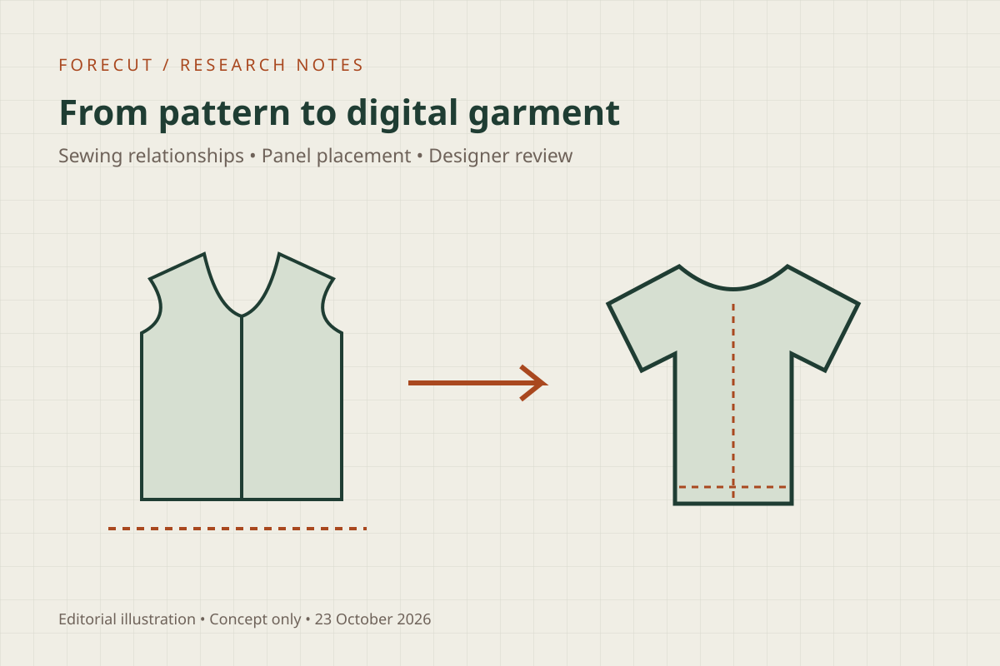
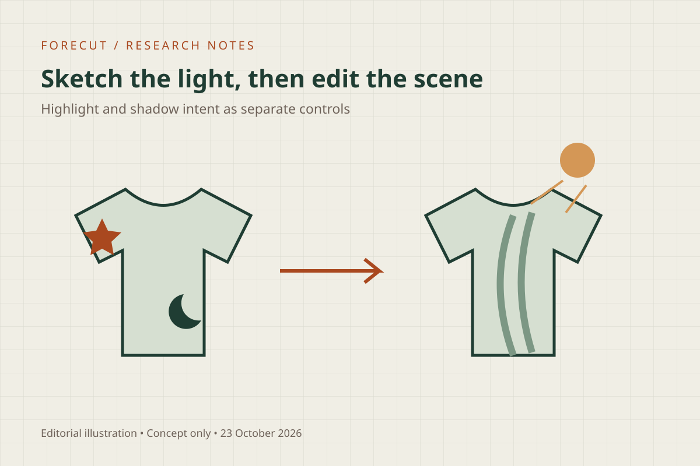
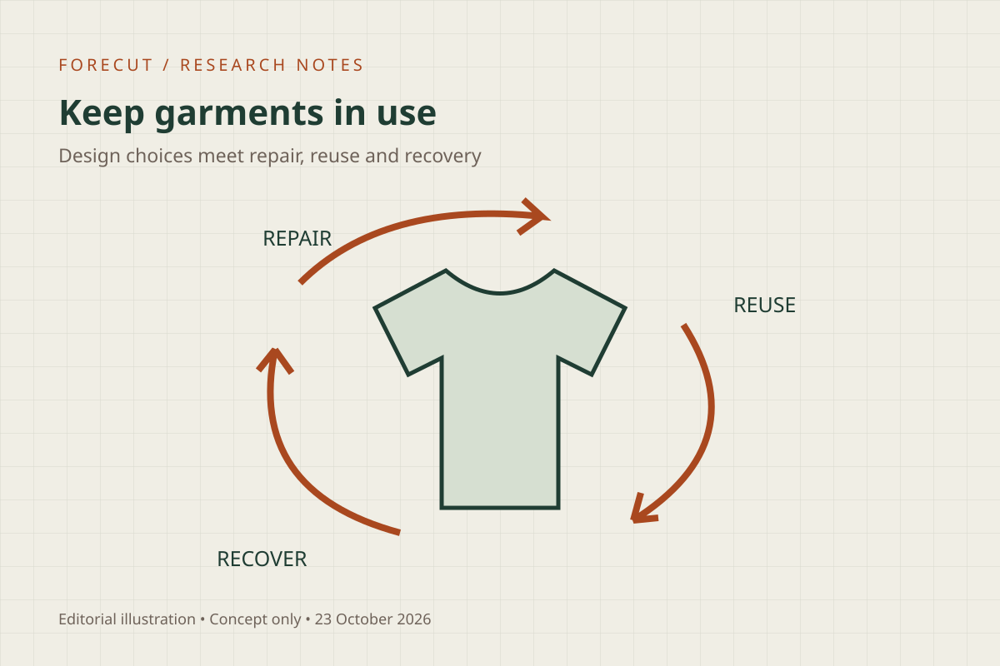

Journal / Research briefing
3D fashion research: smarter assembly, editable lighting and circular design
A practical reading list for designers working between sketches, patterns, 3D garments and manufacturing.

This edition brings together one government report published on 16 October and two earlier October preprints not covered in our previous shortlist. The common question: which parts of garment development can be supported by automation, and where does technical judgment remain essential?
1. Automatic digital garment assembly
What changed: Towards automatic digital garment assembly predicts sewing relationships and panel placement from existing 2D vector patterns. It addresses hems, facing seams and construction properties alongside ordinary seams, while preserving input pattern geometry.
The study evaluates 4,035 professionally assembled garment instances. Complete seam and hem topology is recovered for 63.3% of test garments; every panel meets placement criteria in 66.2%. These are separate task results, not an end-to-end production success rate.
Why it matters: For a CLO3D or DPC team, this targets preparation work between pattern import and draping. Our interpretation is that the strongest near-term use is suggested assembly that a designer can inspect and correct.
Worth reading: Section III for sewing operations, Figure 2 for the collar example, and Section VII for evaluation and CAD integration.
Limit: The demonstrated integration does not establish availability in CLO3D or reliable automation across every garment category.
2. Give sketch-to-3D output editable lighting

What changed: From Sketch to Scene: Relightable Garment Reconstruction from Marked Sketches combines a rough sketch, highlight and shadow symbols, and a texture prompt. It produces a garment mesh with an explicit directional light, allowing the scene to be relit after generation.
Why it matters: This is relevant to concept presentation: designers can communicate intended highlights and folds rather than relying entirely on text prompts. For technical review, keep visual intent separate from verified garment construction.
Worth reading: Figure 1, Sections 4.2–4.6 on lighting and reconstruction, and Section 6 on artifacts, coverage and material assumptions.
Limit: Relightable geometry is not evidence of accurate sewing patterns, material mechanics, measurements or fit. Our recommendation is to use this class of tool for visual exploration before technical validation.
3. Connect circularity policy to product development

What changed: Textile Circular Economy: Policy Options for the U.S. examines options including producer responsibility and tax incentives. Its evidence includes literature, site visits and interviews with 49 stakeholders. It also identifies funding and infrastructure barriers.
Why it matters: Our design takeaway is to discuss repair access, replaceable components and clear material identification during development. Recording these choices in a tech pack helps make the intended construction explicit.
Worth reading: The comparisons of policy options, their tradeoffs, and the discussion of collection and recycling infrastructure.
Limit: The report presents policy options, not newly enacted nationwide requirements. It does not prove that an individual garment or design change reduces lifecycle impacts.
What to try in your next development review
- Pattern assembly: Review suggested seam matches and panel positions before accepting the drape.
- Concept images: Label generated visuals as design intent; maintain confirmed construction and measurements separately.
- Product longevity: Ask whether key trims can be replaced and whether material composition is documented.